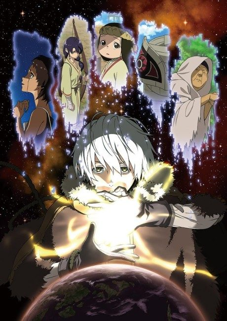
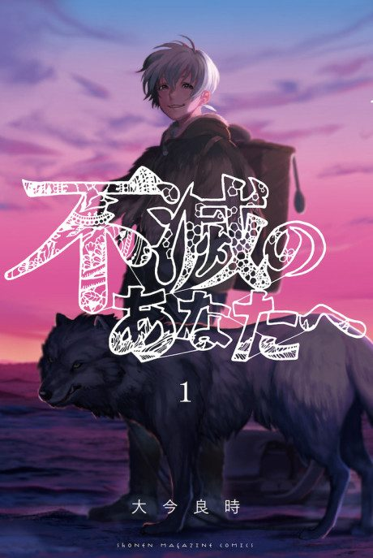

To Your Eternity
不滅のあなたへ
After the anime, read the manga from Volume 20.
8.1AniList score
—Animeter, no votes yet
62episodes, 3 seasons
Anime finished. Where does the manga pick up?
Start at Volume20
After Season 3, 19 of the manga's 25 volumes have been adapted. Start reading from Volume 20.
11925 end
Season 3Start reading here